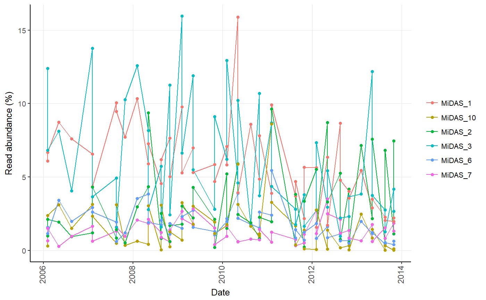

Generates a timeseries plot showing relative read abundances over time.
amp_timeseries(data, time_variable = "")
| data | (required) Data list as loaded with |
|---|---|
| time_variable | (required) The name of the column in the metadata containing the time variables, e.g. |
| group_by | Group the samples by a variable in the metadata. |
| tax_aggregate | The taxonomic level to aggregate the OTUs. (default: |
| tax_add | Additional taxonomic level(s) to display, e.g. |
| tax_show | The number of taxa to show, or a vector of taxa names. (default: |
| tax_class | Converts a specific phylum to class level instead, e.g. |
| tax_empty | How to show OTUs without taxonomic information. One of the following:
|
| split | Split the plot into subplots of each taxa. (default: |
| raw | (logical) Display raw input instead of converting to percentages. (default: |
| plotly | (logical) Returns an interactive plot instead. (default: |
| ... | Additional arguments passed to |
A ggplot2 object.
#Load example data data("AalborgWWTPs") #Timeseries of the 5 most abundant OTUs based on the "Date" column amp_timeseries(AalborgWWTPs, time_variable = "Date", tax_aggregate = "OTU")#> Warning: Duplicate dates in column Date, displaying the average for each date. #> Consider grouping dates using the group_by argument or subset the data using amp_subset_samples.#As the above warning suggests, there are more than one sample per date in the data, #in this case one from Aalborg East and one from Aalborg West. The average of the #two samples is then shown per date. In such case it is then recommended to either #subset the data, or group the samples by setting group_by = "" and split by tax_aggregate #by setting split = TRUE: amp_timeseries(AalborgWWTPs, time_variable = "Date", group_by = "Plant", split = TRUE, tax_show = 6, tax_aggregate = "Genus", tax_add = "Phylum")